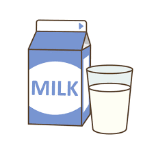

Hello, world! My name is Eli.
This is a webpage all about me. My likes, dislikes, and other information about me.
Biography
I am a student at Post Falls Highschool. I am currently taking Web Design 2. I have two cats and I have two dogs, and a couple of fish. I have one younger sister and she is in Post Falls Middle School. In my spare time I like to learn things about my career interest and that is computer science. I'm not entirely sure what part of computer science I want to do but i'm thinking that I want to be a software architect.
My Favorite Quotation
“Find a job you love, and you will never have to work a day in your life.” - Confucious
Places I'd like to visit and what I'd like to do there!
- Rome, Italy
- Colosseum
- Pantheon
- Trevi Fountain
- Tokyo, Japan
- Imperial Palace
- Tokyo Skytree
- Sensō-ji
- Paris, France
- The Louvre Museum
- The Eiffel Tower
- Cathédrale Notre-Dame
Things I'd like to experience in my lifetime
- Go skydiving
- Travel the world and explore new places
- Fly solo. I want to get my pilots license when i'm older.
Authentic foods I'd like to try someday
- Rendang
- Apfelstrudel
- Kimichi
| My favorite things | The things | Links | Images |
|---|---|---|---|
| Favorite Time of Year | Winter because you can always put on more layers but in the summer you cant infinitely take off layers. Also I love the snow. | Winter |  |
| Favorite Drink | My favorite drink is probably milk because it tastes good and is refreshing. | Milk |  |
| Favorite Animal | My favorite animal is probably a monkey. This is because they are silly and they are cool animals. | Monkey |  |
| Favorite Class | My favorite class is probably Web Design because I feel like i'm learning something valuable and it is an interesting class. Second place would have to be Math though. | Web Design |  |
| Favorite Food | My favorite food is probably Steak because I think it is really good. | Steak |  |